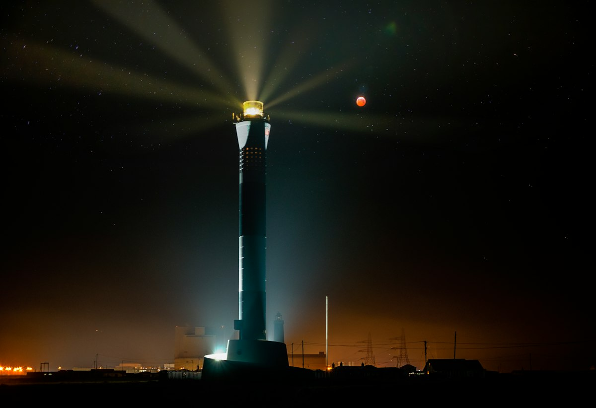

Sixty years turn a spaceflight into two surnames and a date
Space.com's November anniversary note keeps the launch date and the crew names. The problem the flight was sent to solve has no field in that format.

A headline, an address, and an exclamation mark
Space.com ran a line in its anniversary column on Nov. 11, 2026. The headline reads: “On this day in space! Nov. 11, 1966: NASA launches Gemini 12 mission with astronaut icons Buzz Aldrin and Jim Lovell aboard.” The address repeats the month and the day, then adds the year of writing. Two dates sit in the record. One names a launch, and the other names the remembrance of it.
Taken as an object, the line is mostly punctuation. The exclamation mark works harder than the sentence behind it. Strip the decoration and what remains is one date, one vehicle designator, and two surnames. Nothing in the note says what the crew was sent to do, and the format never promised that clause. Somebody has to fill the gap, and the reader usually does it silently.
Shortening has a limit
Anniversary notes shorten, and shortening is a policy with a schedule behind it. A strip that runs on every date of the year cannot afford one argument per entry. So the format keeps what a reader can check without opening a file: the when, and the who. Anything needing a specialist or a document falls out of the line, and Gemini 12 reaches the page as what the template produces when nobody adds to it. That limit is set by a calendar, and a calendar does not rank what it holds.
The dropped item is the interesting one. A launch is an event. A mission is an assignment, which is a sentence about a problem somebody wanted solved. The note carries the event and has no field for the assignment. Readers who already know that second sentence assume the column told them. Readers who never met it go the whole day without the missing clause turning up.
Two surnames carry borrowed fame
The heaviest word in the line is icons: the note calls Aldrin and Lovell astronaut icons and attaches no achievement to the label. A reader supplies one. That supplying draws on stories this anniversary is not telling, which makes it the cheapest move available to a format that cannot explain the flight. Whatever the mission was for now sits behind what the two men did later.
Borrowed fame is also a selection pressure. Two surnames the public already recognizes tend to carry a launch into a feed. A crew whose names mean nothing to a general reader makes a weaker anniversary entry, so it runs less often or not at all. Sixty years on, the memory of a program is a list of what its people did afterward. The flight that put them there is recalled only as the beginning of a career. Nobody decided that in an editorial meeting.
The strongest case for the short line
The defense of the format is genuine. A fixed date is the kind of fact nobody has to interpret. A reader can check one against a calendar in a single motion, which is more than most history writing offers. Sixty years of spaceflight becomes browsable in one scroll, at a cost no long-form archive matches. The strip also runs on the dull dates nobody would commission and the famous ones nobody can afford to skip.
That service is worth conceding, and the complaint here is narrow. Nobody needs an anniversary note abolished. This objection targets a date whose only text is a receipt, and a receipt has no field for the work inside it. A column saying NASA launched Gemini 12 with Aldrin and Lovell is accurate. Accuracy is not content. Six decades of distance do the damage before any editorial mistake gets a chance.
What this file cannot confirm
Be exact about the limits of this reading. What sits in the source file is a headline plus an address, with a publication date of November 11, 2026. The body of the note is not in hand. Everything a science desk would ask sits outside the material available here. The objective of the flight. The crew size and the duration. Whether anything that had gone badly before went well this time. None of that is answerable from one line of type, and this piece will not pretend otherwise.
The published note may say more.
A format cannot be blamed for what it was never built to carry, and reading the address alone suggests a standing template with a fixed allowance. That is a claim about a document type rather than about a person at a keyboard. Where the template decides the payload, the writer has no room. Where the template allows more and the printed note still names nobody's job, the omission belongs to somebody.
Why sixty years change what a date can hold
Distance changes the audience as well as the record. A reader meeting a 1966 launch in 2026 has almost certainly never met the flight. The column knows that. Such a reader arrives with two famous surnames and no framework to place them, so the note leads with recognition. The anniversary is hardest to write honestly at the exact point where it has the most readers. The address puts sixty years between the launch and its own writing, and that span is enough to make a flight's documents the only way into the flight.
The same line could carry one more clause and gain a subject. A headline has room, in principle, for what the flight was for, but it does not use the room and the reason is structural rather than careless. Somebody writes these lines for every date in the year. That work is done fast, against a template, and a template with no field for objectives never reminds anyone to add one. Someone who already knows the objective will not miss it. Someone who does not will read the line twice and still have only two names.
What a reader can do with the line
The short note is an index, and it works better when treated as one. It claims that something happened on a date, published by people with better access, filed under an address that discloses the day of writing. Every fact inside it is checkable and none of it is explanation. The work of finding out what Gemini 12 was for belongs to a mission record or a flight transcript. Neither of those gets shorter with age.
The habit worth keeping is subtraction. A reader can put the note on one side of a card and what it leaves out on the other. For Gemini 12 in the file available here, that leaves two surnames and a date. Sixty years is enough to turn an assignment into a name day, and nobody has to decide that. A program ends up remembered for the people who outlived it.